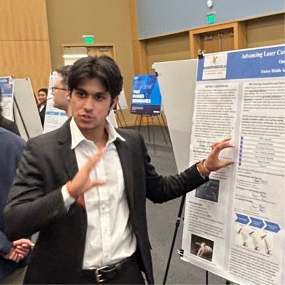
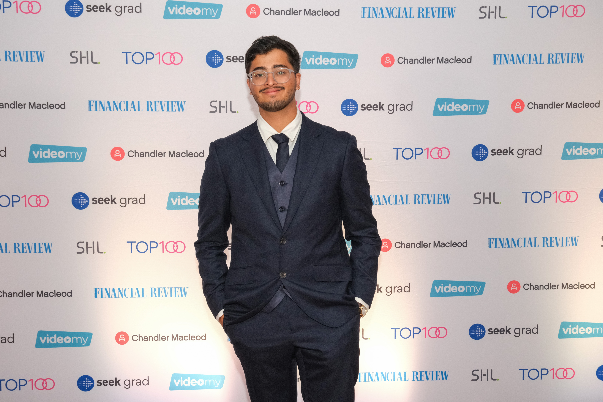

About
The team behind Crucible Ventures.
A small operating team working across company design, capital, and product execution.

I turn early ideas into working products and set the technical path from 0 to 1.
Chief Technology Officer

I shape the studio's direction and work with founders on how new ventures get built and scaled.
Chief Executive Officer
I evaluate early opportunities, structure the financial side, and pressure-test business models.
Chief Financial Officer